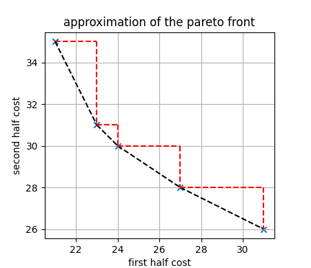

Bicriteria weighted latin square problem
Brief description
In this variant of the Weighted latin square problem, the objective (sum of the costs of the cells) is decomposed into two criteria: the sum of the cells in the first half of the chessboard and the sum of the cells in the second half. A subset of the pareto solutions can be obtained by solving linear combinations of the two criteria with various weights on the objectives. This can be achieved in ToulBar2 via a MultiCFN object.
CFN model
Similarly to the Weighted latin square problem, NxN variables are created with a domain size N. In this model, the permutation of every row and every column is ensured through infinite costs in binary cost functions. Two different CFN are created to represent the two objectives: a first CFN where unary costs are added only for the first half of the chessboard, and a second one with unary costs for the remaining cells.
Toulbar2 allows to either solve for a chosen weighted sum of the two cost function networks as input, or approximate the pareto front by enumerating a complete set of non-redundant weights. As it is shown below, the method allows to compute solutions which costs lie in the convex hull of the pareto front. However, potential solutions belonging to the triangles will be missed with this approach.
{kind=link}
Python model
The following code using the pytoulbar2 library solves the bicriteria weighted latin square problem with two different pairs of weights for the two objectives.
import sys
from random import seed, randint
seed(123456789)
import pytoulbar2
from matplotlib import pyplot as plt
N = int(sys.argv[1])
top = N**3 +1
# printing a solution as a grid
def print_solution(sol, N):
grid = [0 for _ in range(N*N)]
for k,v in sol.items():
grid[ int(k[5])*N+int(k[7]) ] = int(v[1:])
output = ''
for var_ind in range(len(sol)):
output += str(grid[var_ind]) + ' '
if var_ind % N == N-1:
output += '\n'
print(output, end='')
# creation of the base problem: variables and hard constraints (alldiff must be decomposed into binary constraints)
def create_base_cfn(cfn, N, top):
# variable creation
var_indexes = []
# create N^2 variables, with N values in their domains
for row in range(N):
for col in range(N):
index = cfn.AddVariable('Cell_' + str(row) + '_' + str(col), ['v' + str(val) for val in range(N)])
var_indexes.append(index)
# all permutation constraints: pairwise all different
# forbidden values are enforced by infinite costs
alldiff_costs = [ top if row == col else 0 for row in range(N) for col in range(N) ]
for index in range(N):
for var_ind1 in range(N):
for var_ind2 in range(var_ind1+1, N):
# permutations in the rows
cfn.AddFunction([var_indexes[N*index+var_ind1], var_indexes[N*index+var_ind2]], alldiff_costs)
# permutations in the columns
cfn.AddFunction([var_indexes[index+var_ind1*N], var_indexes[index+var_ind2*N]], alldiff_costs)
split_index = (N*N)//2
# generation of random costs
cell_costs = [[randint(1,N) for _ in range(N)] for _ in range(N*N)]
# multicfn is the main object for combining multiple cost function networks
multicfn = pytoulbar2.MultiCFN()
# first cfn: first half of the grid
cfn = pytoulbar2.CFN(ubinit = top, resolution=6)
cfn.SetName('first half')
create_base_cfn(cfn, N, top)
for variable_index in range(split_index):
cfn.AddFunction([variable_index], cell_costs[variable_index])
multicfn.PushCFN(cfn)
# second cfn: second half of the grid
cfn = pytoulbar2.CFN(ubinit = top, resolution=6)
cfn.SetName('second half')
create_base_cfn(cfn, N, top)
for variable_index in range(split_index+1, N*N):
cfn.AddFunction([variable_index], cell_costs[variable_index])
multicfn.PushCFN(cfn)
# solve with a first pair of weights
weights = (1., 2.)
multicfn.SetWeight(0, weights[0])
multicfn.SetWeight(1, weights[1])
cfn = pytoulbar2.CFN()
cfn.InitFromMultiCFN(multicfn) # the final cfn is initialized from the combined cfn
# cfn.Dump('python_latin_square_bicriteria.cfn')
result = cfn.Solve(timeLimit = 60)
if result:
print('Solution found with weights', weights, ':')
sol_costs = multicfn.GetSolutionCosts()
solution = multicfn.GetSolution()
print_solution(solution, N)
print('with costs:', sol_costs, '(weighted sum=', result[1], ')')
print('\n')
# solve a second time with other weights
weights = (2.5, 1.)
multicfn.SetWeight(0, weights[0])
multicfn.SetWeight(1, weights[1])
cfn = pytoulbar2.CFN()
cfn.InitFromMultiCFN(multicfn) # the final cfn is initialized from the combined cfn
# cfn.Dump('python_latin_square_bicriteria.cfn')
result = cfn.Solve(timeLimit = 60)
if result:
print('Solution found with weights', weights, ':')
sol_costs = multicfn.GetSolutionCosts()
solution = multicfn.GetSolution()
print_solution(solution, N)
print('with costs:', sol_costs, '(weighted sum=', result[1], ')')
# approximate the pareto front
(solutions, costs) = multicfn.ApproximateParetoFront(0, 'min', 1, 'min', showSolutions = 0, timeLimit = 300, timeLimit_per_solution = 60)
fig, ax = plt.subplots()
ax.scatter([c[0] for c in costs], [c[1] for c in costs], marker='x')
for index in range(len(costs)-1):
ax.plot([costs[index][0], costs[index+1][0]], [costs[index][1],costs[index+1][1]], '--', c='k')
ax.plot([costs[index][0], costs[index+1][0]], [costs[index][1],costs[index][1]], '--', c='red')
ax.plot([costs[index+1][0], costs[index+1][0]], [costs[index][1],costs[index+1][1]], '--', c='red')
ax.set_xlabel('First objective')
ax.set_ylabel('Second objective')
ax.set_title('Approximation of the Pareto front')
ax.set_aspect('equal')
plt.grid()
plt.show()
C++ model
The following code using the C++ toulbar2 library API solves the weighted latin square problem.
#include <iostream>
#include <vector>
#include "core/tb2wcsp.hpp"
#include "mcriteria/multicfn.hpp"
#include "mcriteria/bicriteria.hpp"
using namespace std;
// an alias for storing the variable costs
// first dim is the grid rows and second is the columns
typedef std::vector<std::vector<std::vector<Cost>>> LatinCostArray;
// generate random costs for each variable (cell)
// param N grid size
// param costs the matrix costs
void createCostMatrix(size_t N, LatinCostArray& costs) {
// N*N*N values, costs for each cell
costs.resize(N);
for(auto& col: costs) {
col.resize(N);
for(auto& cell: col) {
cell.resize(N);
for(size_t val_ind = 0; val_ind < N; val_ind += 1) {
cell[val_ind] = (rand()%N)+1;
}
}
}
}
// print the costs for each unary variabl (cell)
// param costs the cost matrix
void printCosts(LatinCostArray& costs) {
for(size_t row_ind = 0; row_ind < costs.size(); row_ind ++) {
for(size_t col_ind = 0; col_ind < costs[row_ind].size(); col_ind ++) {
cout << "cell " << row_ind << "_" << col_ind;
cout << " : ";
for(auto& cost: costs[row_ind][col_ind]) {
cout << cost << ", ";
}
cout << endl;
}
}
}
// fill in a WCSP object with a latin square problem
// param wcsp the wcsp object to fill
// param LatinCostArray the cost matrix
// param N grid size
// top the top value, problem upper bound (the objective is always lower than top)
void buildLatinSquare(WeightedCSP& wcsp, LatinCostArray& costs, size_t N, Cost top) {
// variables
for(size_t row = 0; row < N; row ++) {
for(unsigned int col = 0; col < N; col ++) {
wcsp.makeEnumeratedVariable("Cell_" + to_string(row) + "," + to_string(col), 0, N-1);
}
}
/* costs for all different constraints (top on diagonal) */
vector<Cost> alldiff_costs;
for(unsigned int i = 0; i < N; i ++) {
for(unsigned int j = 0; j < N; j ++) {
if(i == j) {
alldiff_costs.push_back(top);
} else {
alldiff_costs.push_back(0);
}
}
}
/* all different constraints */
for(unsigned int index = 0; index < N; index ++) {
for(unsigned int var_ind1 = 0; var_ind1 < N; var_ind1 ++) {
for(unsigned int var_ind2 = var_ind1+1; var_ind2 < N; var_ind2 ++) {
/* row constraints */
wcsp.postBinaryConstraint(N*index+var_ind1, N*index+var_ind2, alldiff_costs);
/* col constraints */
wcsp.postBinaryConstraint(index+var_ind1*N, index+var_ind2*N, alldiff_costs);
}
}
}
/* unary costs */
size_t var_ind = 0;
for(size_t row = 0; row < N; row ++) {
for(size_t col = 0; col < N; col ++) {
wcsp.postUnaryConstraint(var_ind, costs[row][col]);
var_ind += 1;
}
}
}
// print a solution as a grid
// param N the size of the grid
// param solution the multicfn solution (dict)
// param point the objective costs (objective space point)
void printSolution(size_t N, MultiCFN::Solution& solution, Bicriteria::Point& point) {
for(size_t row = 0; row < N; row ++) {
for(size_t col = 0; col < N; col ++) {
string var_name = "Cell_" + to_string(row) + "," + to_string(col);
cout << solution[var_name].substr(1) << " ";
}
cout << endl;
}
cout << "obj_1 = " << point.first << " ; obj2 = " << point.second << endl;
}
// main function
int main() {
srand(123456789);
size_t N = 4;
Cost top = N*N*N + 1;
// two cost matrice
LatinCostArray costs_obj1, costs_obj2;
// init the objective with random costs
createCostMatrix(N, costs_obj1);
createCostMatrix(N, costs_obj2);
// cout << "Randomly genereated costs : " << endl;
// printCosts(costs_obj1);
// cout << endl << endl;
// printCosts(costs_obj2);
tb2init();
initCosts();
// create the two wcsp objects
WeightedCSP* wcsp1 = WeightedCSP::makeWeightedCSP(top);
WeightedCSP* wcsp2 = WeightedCSP::makeWeightedCSP(top);
// initialize the objects as a latin square problem objectives with two different objectves
buildLatinSquare(*wcsp1, costs_obj1, N, top);
buildLatinSquare(*wcsp2, costs_obj2, N, top);
// creation of the multicfn
MultiCFN mcfn;
mcfn.push_back(dynamic_cast<WCSP*>(wcsp1));
mcfn.push_back(dynamic_cast<WCSP*>(wcsp2));
// computation iof the supported points of the biobjective problem
Bicriteria::computeSupportedPoints(&mcfn, std::make_pair(Bicriteria::OptimDir::Optim_Min, Bicriteria::OptimDir::Optim_Min));
// access to the computed solutions and their objective values
std::vector<MultiCFN::Solution> solutions = Bicriteria::getSolutions();
std::vector<Bicriteria::Point> points = Bicriteria::getPoints();
// print all solutions computed
cout << "Resulting solutions: " << endl;
for(size_t sol_index = 0; sol_index < solutions.size(); sol_index ++) {
printSolution(N, solutions[sol_index], points[sol_index]);
cout << endl;
}
// delete the wcsp objects
delete wcsp1;
delete wcsp2;
return 0;
}
The above code can be compiled with the following command:
g++ -O3 -std=c++17 -Wall -DBOOST -DLONGLONG_COST -DLONGDOUBLE_PROB -I $YOUR_TB2_INCLUDE_PATH main.cpp -c -o main.o
Where $YOUR_TB2_INCLUDE_PATH is the path to the ToulBar2 src directory.
And the compiled program is obtained via :
g++ -O3 -std=c++17 -Wall -DBOOST -DLONGLONG_COST -DLONGDOUBLE_PROB main.o -o main -L $YOUR_LIBTB2_PATH -ltb2 -lgmp -lboost_graph -lboost_iostreams -lz -llzma
Where $YOUR_LIBTB2_PATH is the path to the ToulBar2 compiled library.
When running the program, do not forget to set the $(LD_LIBRARY_PATH) environment variable in Linux.